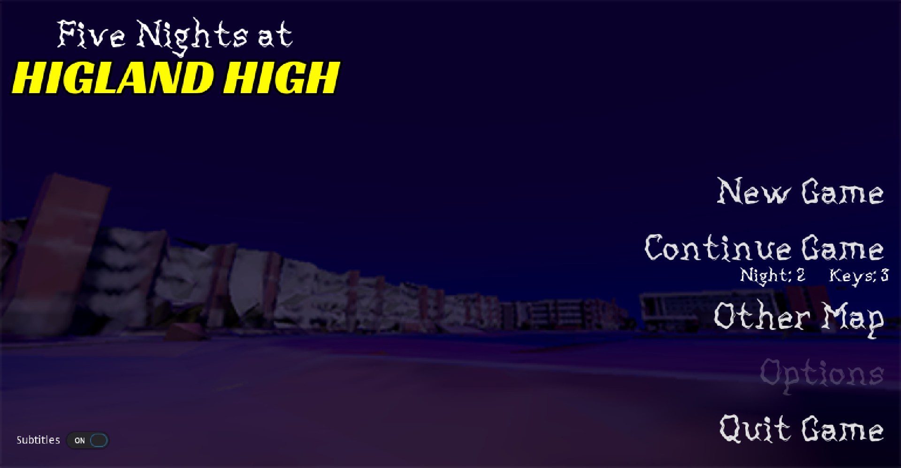
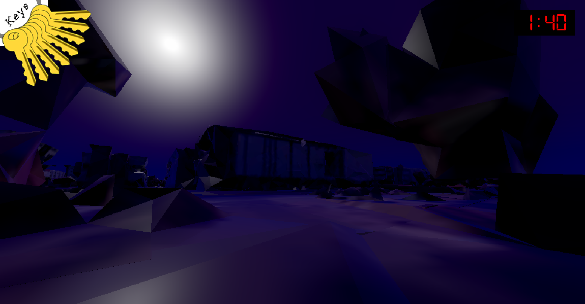

Five Nights at Higland High
Estimated Project Date: Late 2020-Early 2021
More of a planned joke game than anything else. After Halp Life Pi, I still wanted to test my 3D skills, so I started working on this. I ended up not getting very far.
What's available is pretty much a walking simulator in horribly mangled versions of Google Maps data at night. Even though there's not much to it, it's pretty cool to play. It has a huge liminal vibe.
What was planned was for a "horror" game where you had to walk around a campus avoiding the ghosts of the staff who used to work there. Collect 5 keys from the classrooms, and you get to go to the basement and win the game. I mainly abandoned this due to it requiring more work than I had experience for.
Once I get better at making stuff in 3D, I will definitely 100% revisit this.
Downloads
Playable builds of this prototype are hosted directly on this site! The currently available downloads are:
[Download] Windows x86 (.7z, 22.8MB)
[Download] Linux x86 (.7z, 23.4MB)
Extras
The source code is also available! It's a Godot 3 project, so be sure to open it in the latest version of Godot 3 (3.6 at time of writing) and not Godot 4.

